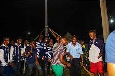
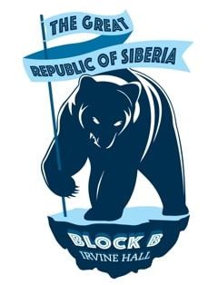

The BEARS are HERE!
October 2, 2021 by R. Salmon

The Bears are here! The Men of Siberia have decided to lyme and have their monthly linkup.
They really need no reason to linkup and have a drink with eachother. But tonight they are celebrating a major win in the brotherhood.
One of our members have just made it big in their corporation. This is a huge milestone for not only them but the fraternity. We salute our fellow Siberian.
The Great Republic is used to this type of celebration. Our fraternity knows nothing less than winning and making triumphs.
The men always aspire to create a legacy for themselves in everything they do. This is the true mark of what it means to be a Siberian!
SIBERIA has a New Look.
September 30, 2021 by R. Salmon

The Great Republic Of Siberia has a new look!
We have created an emblem with the signature Bear carrying a flag on a block of ice.
The Great Republic, a stalwart fraternity, is known for cultivating of some the most
outstanding men in society. The fraternity has instilled great pride and confidence for the future men of tomorrow.
This new emblem is simple yet unique. It closely embodies what the fraternity stands for with its imagery.
The Bear symbolises the strong and powerful men in the brotherhood, claiming their territory (with a flag) regardless of the limitations (a small block of ice).
This truly displays the resilience in our men to achieve all the things they aspire and all I can say is; this new look is here to stay!